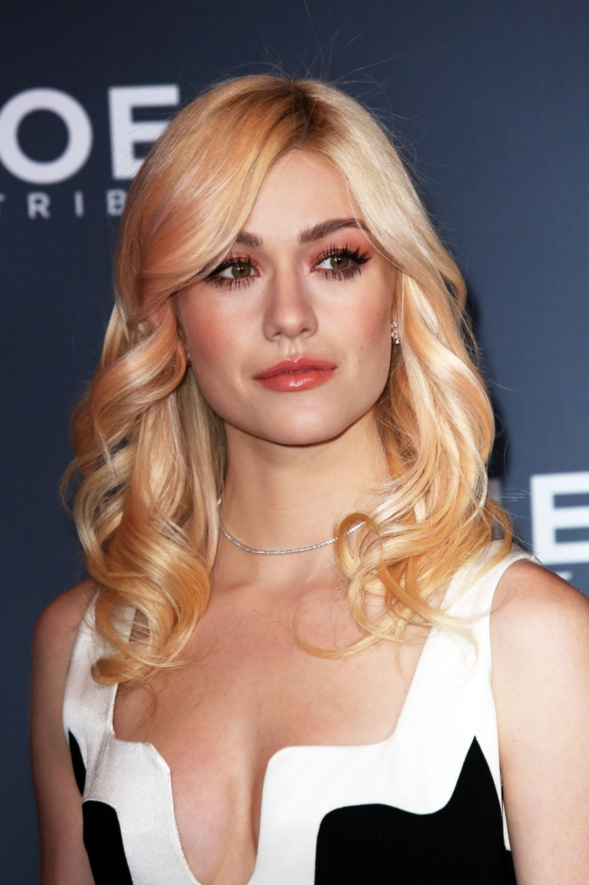
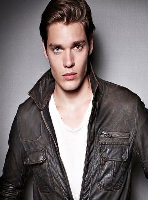

Clary Fray é uma adolescente que, sem querer, presencia o acontecimento de um crime. Mas este não é um crime como outro qualquer: três adolescentes cobertos com tatuagens estranhas são os responsáveis pelo assassinato, executado com armas que Clary nunca viu antes.

Jace Wayland é um hábil Caçador de Sombras que atualmente reside em Nova York. Sua vida é virada de cabeça para baixo com a chegada de Clary Fray e o retorno súbito e indesejado do homem que o criou.
Simon Lewis é um Diurno, um tipo raro de vampiro capaz de andar no sol. Simon foi uma vez um mundano cuja vida mudou quando ele seguiu sua amiga de longa data Clary Fairchild em sua nova vida no Mundo das Sombras. Sua lealdade e sentimentos para Clary são testados enquanto ele luta junto a ela em uma jornada épica.
Alec Lightwood é um Caçador de Sombras e o atual Cônsul da Clave. Ele é o marido de Magnus Bane, é o pai adotivo de Rafael e Max Lightwood-Bane, e é o irmão mais velho de Isabelle e Max, assim como o irmão adotivo e parabatai de Jace Herondale.
Isabelle Lightwood é uma Caçadora de Sombras atualmente sob a Conclave de Nova York. Ela é a única filha de Robert e Maryse Lightwood, irmã de Alec e Max, e a irmã adotiva de Jace Herondale.
Luke Garroway, nascido Lucian Graymark, é o marido de Jocelyn Fray e padrasto, assim como também o homem que criou sua filha, Clary. Ele é um lobisomem que foi inicialmente um Caçador de Sombras e um membro do Ciclo, antes de ser traído por seu parabatai, Valentim Morgenstern.
Magnus foi o feiticeiro que foi contratado por Jocelyn Fray para apagar as memórias de Clary Fray sobre qualquer coisa relacionada ao Mundo das Sombras.
Valentim Morgenstern é o líder do Ciclo, um grupo desonesto de Caçadores de Sombras idealistas que tem como objetivo fazer evoluir sua espécie, uma meta que ele tenta realizar através da experimentação com sangue de demônio e de anjo. Ele também era o marido de Jocelyn e o pai de Clary Fray e outro menino.
Jocely é a mãe de Clary,fazia parte do mundo das sombras,mas saiu para proteger sua filha,Clary Fray.
Jonathan Morgenstern, o irmão maligno de Clary (Katherine McNamara). Por muito tempo, acreditou-se que ele estava morto, mas o grande vilão da franquia agora toma sua forma verdadeira para a reta final de Shadowhunters.